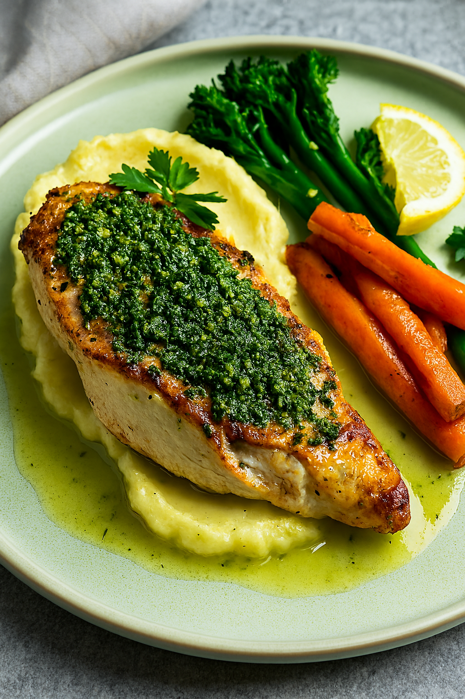

Braised Beef Short Rips

Ingredients:
- 4 lbs beef short ribs
- 2 tbsp vegetable oil
- 1 onion, diced
- 2 carrots, diced
- 2 celery stalks, diced
- 4 garlic cloves, minced
- 2 tbsp tomato paste
- 3 cups beef stock
- 1 tbsp balsamic vinegar (optional)
- Thyme, rosemary, bay leaf
- Salt, pepper
Instructions:
- Brown ribs in oil, remove and set aside.
- Sauté vegetables, add garlic and tomato paste.
- Add beef stock and herbs, return ribs to pot.
- Cover and braise at 160°C (325°F) for 2.5–3 hours.
- Reduce sauce, season, and serve over ribs.